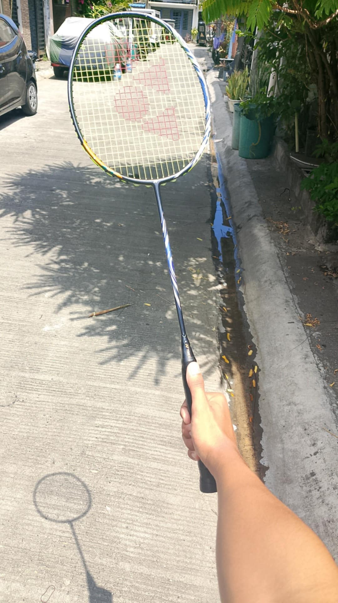
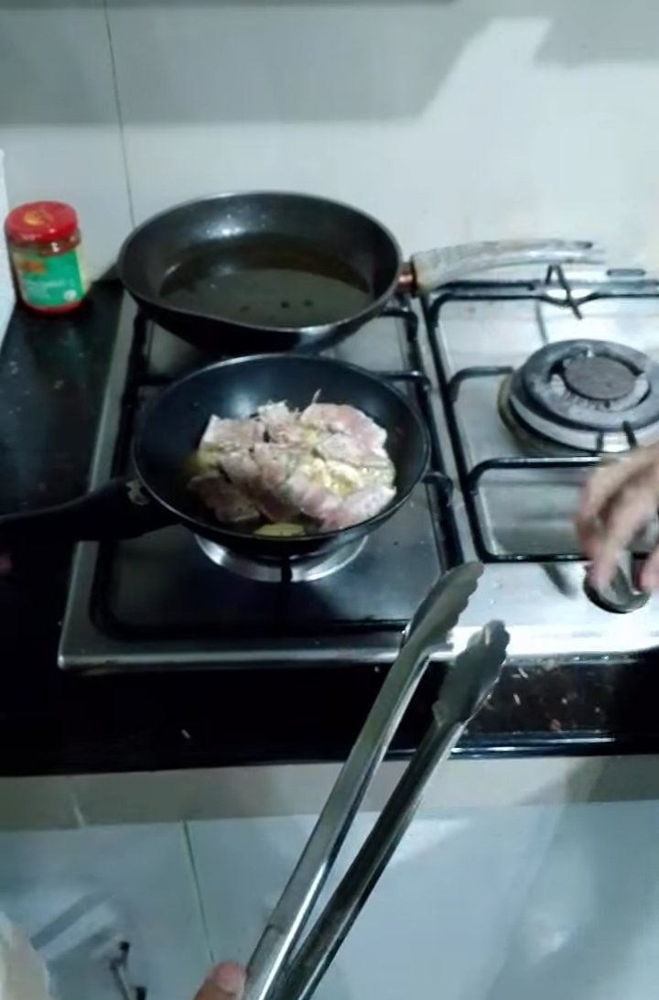

What I Do for "Fun"
Here are some of my favorite activities

Badminton
Badminton the sport I play the most, because I can move fast and practice my reaction time to hit the rocket. I also play other sports but Im not that good at playing at it, lets say Basketball I played basketball before playing badminton I wasn't good at it and I always have multiple injuries when I was young that's why I dont play Basketball lately.

Cooking
Cooking one of my Favorite things to do besides laying around at the house, my Mom always calls me at the kitchen to help her cook lunch sometimes breakfast. I learned many things with my Mom she even told me a story once why she cooked food in the first place and it gave me a reason now why I need to cook food at the house to help out my mom

Playing Games
Video Games, the most common thing that is happening right now with kids. I play video games as well, Like counter-strike 2, minecreaft, PUBG, and Code Vein This are the types of game I play, these games are challenging and fun to play it practices your senses and memory of how to play the game like a pro